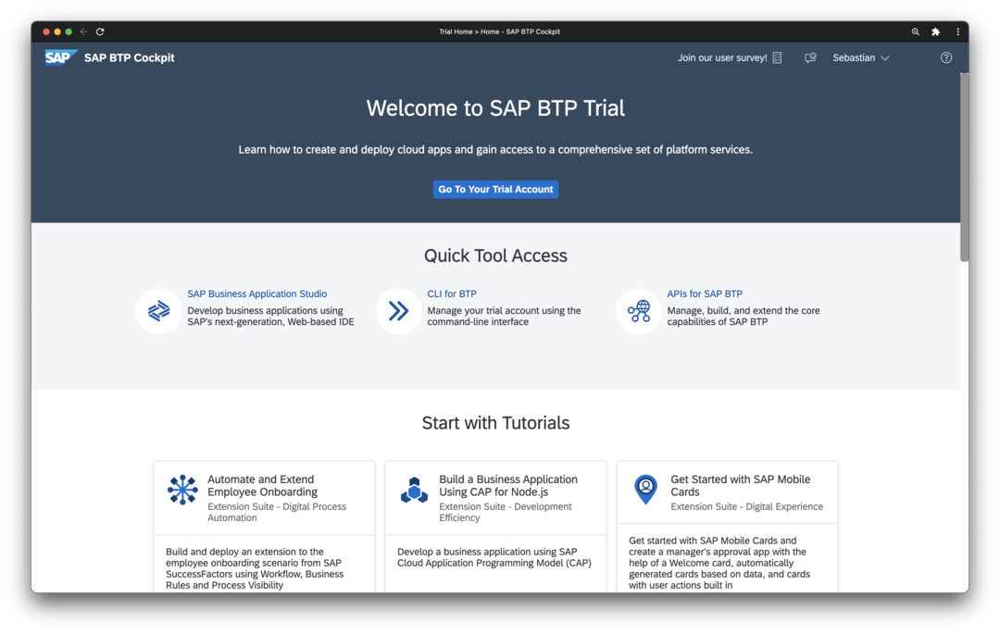
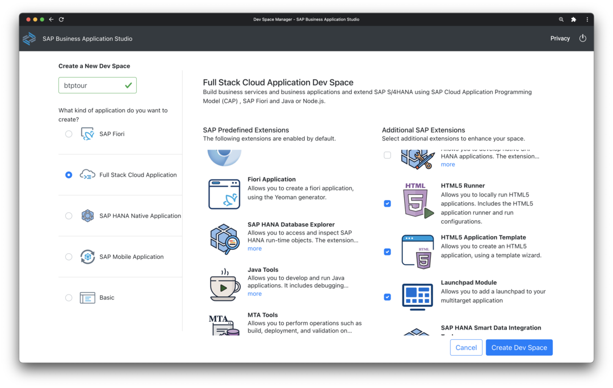
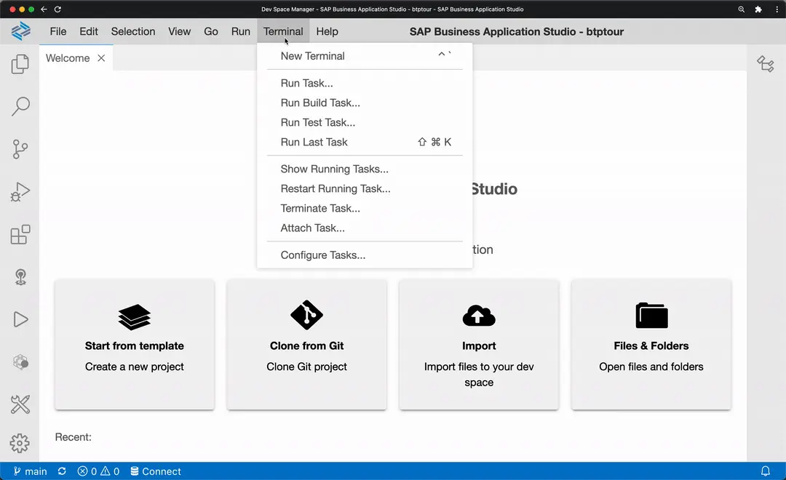
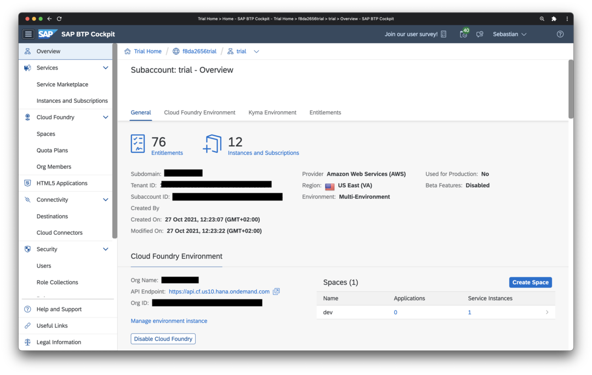
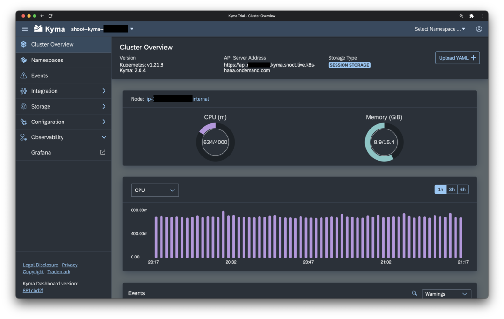

Create a new dev space
- Go to your BTP Trial account 
- Chose SAP Business Application Studio in Quick Access
- Select
Create Dev Space - Choose a name, select the profile Full Stack Cloud Application, and add additional extensions like HTML5 Runner, HTML5 Application Template, Launchpad Module, and Workflow Management 
- When the dev space is finally ready, click on the name to enter the Business Application Studio (BAS)
Install the command line tool for Kyma
The built-in terminal of BAS provides a convenient option for running a great variety of command line tools often needed for building, testing and managing code as well as interacting with cloud platforms like SAP BTP, Azure, AWS, or Google Cloud.
In the BTP Tour we will use the terminal to configure and control our Kubernetes/Kyma cluster in the BTP Trial environment.

-
Open a command line in BAS via
Terminal > New Terminal -
Download and install the Kubernetes command line tool
kubectl:
mkdir -p ~/local/bin
cd ~/local/bin
curl -LO "https://dl.k8s.io/release/$(curl -L -s https://dl.k8s.io/release/stable.txt)/bin/linux/amd64/kubectl"
chmod u+x kubectl
- Create a new file
.bash_aliasesand add the following:
if [ -d "$HOME/local/bin" ]; then
PATH="$HOME/local/bin:$PATH"
fi
- Start a new Terminal and verify everything is working:
kubectl version
Note
The kubectl version command should print out details like client version, platform etc. At this point, there is no need to worry if the command also prints an error message like Error from server (NotFound): the server could not find the requested resource. The tool simply states here that it cannot connect to a Kubernetes cluster for displaying further information. This will be addressed in the following.
Setup access to Kyma Cluster
- Go to BTP Trial account https://hanatrial.ondemand.com
- Chose Go To Your Trial Account and enter the trial subaccount in BTP Cockpit 
- Go to Kyma Environment > Link to dashboard
- Download the Kyma access configuration via the Profile icon in the top right and select Get Kubeconfig 
- In BAS, make sure your home directory is opened (Open > /home/user) and no subfolder is selected in the file explorer. The upload the file kubeconfig.yml via File > Upload Files
- Add the following line to
.bash_aliasesand add the following line:
export KUBECONFIG=$HOME/kubeconfig.yml
-
Start a new Terminal and verify everything is working:
bash kubectl version
Warning
For security reasons, the downloaded personal Kyma access configuration expires after 8 hours. After expiry, download a fresh kubeconfig.yml from your Kyma account and upload it again (steps 4 and 5).
Configure access for github.com
- Go to your Github account and sign up for a new personal account if necessary
- Create new Personal Access Token (PAT) in Github (Profile > Settings > Developer settings > Personal access tokens) with scope
repoand copy the generated token. - Open a command line in BAS via
Terminal > New Terminal - Clone your fork of the BTP Tour repository
git clone https://github.com/YOUR_GITHUB_NAME/btptour.git
Hint
Do not forget to replace YOUR_GITHUB_NAME in the command with your Github account name!
This will open a username/password field at the top of the screen of BAS.
-
Enter you email address as username and the generated token as password.
Choose
Save as plaintext on the dev space for future use.